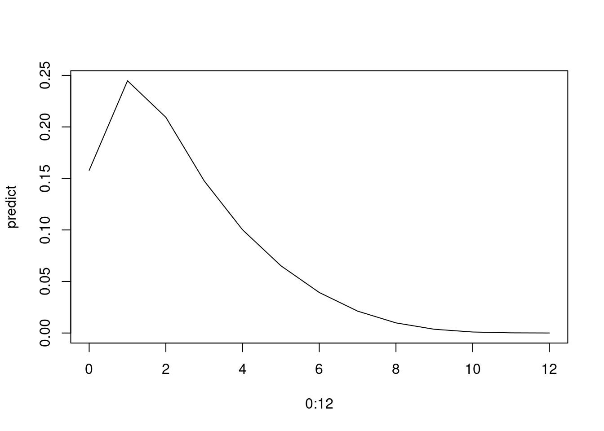
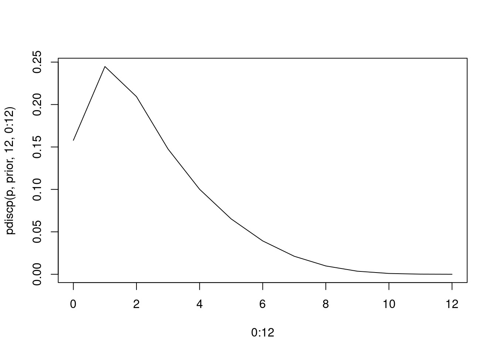
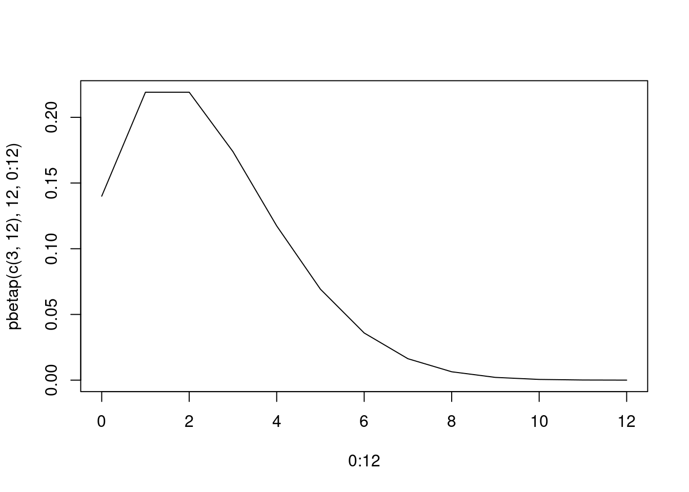

set.seed(29)library(LearnBayes)p = seq(0, 1, by=0.125)
prior = c(0.001, 0.001, 0.950, 0.008, 0.008, 0.008, 0.008, 0.008, 0.008)
sum(prior)## [1] 1likelihood = function (p) p ^ 6 * (1 - p) ^ 4posterior = c()
for (i in 1:length(p)) {
posterior = c(posterior, likelihood(p[i]) * prior[i])
}
posterior = posterior / sum(posterior)
round(cbind(p, prior, posterior), 3)## p prior posterior
## [1,] 0.000 0.001 0.000
## [2,] 0.125 0.001 0.000
## [3,] 0.250 0.950 0.730
## [4,] 0.375 0.008 0.034
## [5,] 0.500 0.008 0.078
## [6,] 0.625 0.008 0.094
## [7,] 0.750 0.008 0.055
## [8,] 0.875 0.008 0.009
## [9,] 1.000 0.008 0.000midpt = seq(0.05, 0.95, by = 0.1)
prior = rep(0.1, 10) # 無情報事前分布
curve(histprior(x, midpt, prior), from = 0, to = 1)p = seq(0, 1, length = 500)
posterior = c()
for (i in length(p)) {
min_idx = which.min(abs(midpt - p[i]))
posterior = c(posterior, dbeta(p, 10, 10) * prior[min_idx]) # コイン Head 10, Tail = 10
}
posterior = posterior / sum(posterior)
ps = sample(p, replace = TRUE, prob = posterior)
hist(ps)p = seq(0, 1, length=100)
plot(p, dbeta(p, 1, 1), type ="l")p = seq(0, 1, length=100)
plot(p, dbeta(p, 23, 8), type ="l")qbeta(c(0.5, 0.95), 23, 8)## [1] 0.7471911 0.8598149q = seq(0, 1, length=100)
plot(q, pbeta(q, 23, 8), type ="l")1 - pbeta(0.6, 23, 8)## [1] 0.9564759sample = rbeta(1000, 23, 8)
sample[1:100]## [1] 0.8070411 0.8255705 0.8477878 0.8108964 0.5317507 0.6689845 0.7476998 0.5928586 0.8221321 0.6747017
## [11] 0.8718341 0.6920089 0.6583218 0.6658947 0.7164831 0.7388286 0.7370553 0.6340145 0.5931665 0.8259576
## [21] 0.8674522 0.6588919 0.7786812 0.8250223 0.7543352 0.7646318 0.8076675 0.7075955 0.5620429 0.6311084
## [31] 0.7760624 0.7828018 0.8001533 0.7533651 0.7204592 0.7126806 0.6963089 0.7200499 0.7241966 0.6954281
## [41] 0.7771320 0.7758104 0.7877369 0.6878208 0.6566363 0.7038708 0.7457192 0.7594498 0.7318217 0.7833370
## [51] 0.7323663 0.7595893 0.8384151 0.7640964 0.7508796 0.7798371 0.8113989 0.7495155 0.7004356 0.8477141
## [61] 0.7682620 0.8378440 0.8100615 0.7901226 0.7423015 0.7588627 0.8255460 0.7433915 0.7981177 0.6595531
## [71] 0.6546487 0.7899955 0.8291286 0.7201989 0.7269412 0.8071294 0.6084613 0.7088205 0.5755315 0.5836573
## [81] 0.8408905 0.6462143 0.7539278 0.7029940 0.6070669 0.8072564 0.6368789 0.7252253 0.6867064 0.7091260
## [91] 0.7579631 0.7055456 0.7030036 0.7053452 0.6349164 0.5357193 0.7662252 0.8386757 0.6946933 0.7423767さらに、10人いる場合の高校を卒業する人数 \(X\) の予測分布を求める．
\[ p(x) = \int_{0}^{1} \binom{10}{x}p^{x}(1-p)^{10-x} Beta(p|23,8) dp \]
\[ \begin{aligned} p(X=9) &= \int_{0}^{1} \binom{10}{9}p^{9}(1-p)^{10-9} Beta(p|23,8) dp \\ &= \int_{0}^{1} 10 \cdot p^{9}(1-p) Beta(p|23,8) dp \\ &= \frac{10}{B(23, 8)} \int_{0}^{1} p^{9}(1-p) p^{22} (1-p)^{7} dp \\ &= \frac{10}{B(23, 8)} \int_{0}^{1} p^{31}(1-p)^{8} dp \\ &= \frac{10}{B(23, 8)} \int_{0}^{1} p^{32 - 1}(1-p)^{9 - 1} dp \\ &= \frac{10}{B(23, 8)} B(32, 9) \\ \end{aligned} \]
10 * beta(32, 9) / beta(23, 8)## [1] 0.1902656\[ \begin{aligned} p(X=10) &= \int_{0}^{1} \binom{10}{10}p^{10}(1-p)^{10-10} Beta(p|23,8) dp \\ &= \int_{0}^{1} p^{10} Beta(p|23,8) dp \\ &= \frac{1}{B(23, 8)} \int_{0}^{1} p^{10} p^{22} (1-p)^{7} dp \\ &= \frac{1}{B(23, 8)} \int_{0}^{1} p^{32}(1-p)^{7} dp \\ &= \frac{1}{B(23, 8)} \int_{0}^{1} p^{33 - 1}(1-p)^{8 - 1} dp \\ &= \frac{1}{B(23, 8)} B(33, 8) \\ \end{aligned} \]
beta(33, 8) / beta(23, 8)## [1] 0.07610622サンプリングすると以下のようにできる．
よって、このときの \(X = 9 \; or \; X = 10\) となる確率を求めれば良い.
\[ p \sim Beta(p|23, 8) \\ x \sim Bin(x|10, p) \]
p = rbeta(10000, 23, 8)
x = rbinom(10000, 10, p)
table(x) / 10000## x
## 1 2 3 4 5 6 7 8 9 10
## 0.0002 0.0024 0.0094 0.0322 0.0787 0.1480 0.2250 0.2493 0.1818 0.0730理論値と近い値となっていることが確認できる．
p = seq(0.1, 0.5, by=0.1)
p## [1] 0.1 0.2 0.3 0.4 0.5prior = c(0.50, 0.2, 0.2, 0.05, 0.05)
mean = sum(p * prior)
mean## [1] 0.195sd = sqrt(sum((p - mean)^2 * prior))
sd## [1] 0.1160819\(Beta(p|3, 12)\) の場合、サンプリング近似を行う.
sample = rbeta(10000, shape1 = 3, shape2 = 12)
mean(sample)## [1] 0.1993212sd(sample)## [1] 0.1002495通学者数 \(Y\) に関して、以下の予測分布が計算できる.
\[ p(y) = \sum_p \binom{12}{y} p^{y} (1-p)^{12-y} g(p) \]
predict = c()
for (y in 0:12) {
p_y = 0
for (i in 1:length(p)) {
p_y = p_y + choose(12, y) * p[i]^y * (1 - p[i])^(12 - y) * prior[i]
}
predict = c(predict, p_y)
}
predict## [1] 0.1578479672 0.2447719936 0.2093137913 0.1475812240 0.1001416403 0.0652427436 0.0393037888 0.0212231429
## [9] 0.0098095892 0.0036170714 0.0009692955 0.0001645993 0.0000131530plot(0:12, predict, type = "l")
pdiscp(p, prior, 12, 0:12)## [1] 0.1578479672 0.2447719936 0.2093137913 0.1475812240 0.1001416403 0.0652427436 0.0393037888 0.0212231429
## [9] 0.0098095892 0.0036170714 0.0009692955 0.0001645993 0.0000131530plot(0:12, pdiscp(p, prior, 12, 0:12), type = "l")
\[ \begin{aligned} p(y) &= \int_0^1 \binom{12}{y} p^{y} (1-p)^{12-y} \frac{1}{B(3, 12)} p^{3 - 1} (1-p)^{12 - 1} dp \\ &= \binom{12}{y} \frac{1}{B(3, 12)} \int_0^1 p^{y + 2} (1-p)^{23-y} dp \\ &= \binom{12}{y} \frac{1}{B(3, 12)} B(y + 3, 24 - y) \\ \end{aligned} \]
predict = c()
for (y in 0:12) {
p_y = choose(12, y) * beta(y + 3, 24 - y) / beta(3, 12)
predict = c(predict, p_y)
}
predict## [1] 1.400000e-01 2.191304e-01 2.191304e-01 1.739130e-01 1.173913e-01 6.919908e-02 3.588101e-02 1.628214e-02
## [9] 6.360210e-03 2.072957e-03 5.330462e-04 9.691749e-05 9.422533e-06sum(predict)## [1] 1plot(0:12, predict, type = "l")pbetap(c(3, 12), 12, 0:12)## [1] 1.400000e-01 2.191304e-01 2.191304e-01 1.739130e-01 1.173913e-01 6.919908e-02 3.588101e-02 1.628214e-02
## [9] 6.360210e-03 2.072957e-03 5.330462e-04 9.691749e-05 9.422533e-06plot(0:12, pbetap(c(3, 12), 12, 0:12), type = "l")
mu = seq(20, 70, by = 10)
prior = c(0.1, 0.15, 0.25, 0.25, 0.15, 0.1)
mu## [1] 20 30 40 50 60 70prior## [1] 0.10 0.15 0.25 0.25 0.15 0.10y = c(38.6, 42.4, 57.5, 40.5, 51.7, 67.1, 33.4, 60.9, 64.1, 40.1, 40.7, 6.4)
ybar = mean(y)
ybar## [1] 45.28333likelihood = function (mu) exp(-1 * length(y) / (2 * 100) * (mu - ybar)^2)
like = likelihood(mu)
like## [1] 2.201480e-17 8.192991e-07 1.873425e-01 2.632064e-01 2.272076e-06 1.205079e-16post = prior * like
post = post / sum(post)
post## [1] 1.954479e-17 1.091063e-06 4.158078e-01 5.841881e-01 3.025731e-06 1.069871e-16dist = cbind(mu, post)
dist## mu post
## [1,] 20 1.954479e-17
## [2,] 30 1.091063e-06
## [3,] 40 4.158078e-01
## [4,] 50 5.841881e-01
## [5,] 60 3.025731e-06
## [6,] 70 1.069871e-16discint(dist, 0.8)## $prob
## [1] 0.9999959
##
## $set
## [1] 40 50lambda = c(0.5, 1, 1.5, 2, 2.5, 3)
prior = c(0.1, 0.2, 0.3, 0.2, 0.15, 0.05)
likelihood = function (lambda) exp(-6 * lambda) * (6 * lambda)^12
post = prior * likelihood(lambda)
post = post / sum(post)
cbind(lambda, prior, round(post, 2))## lambda prior
## [1,] 0.5 0.10 0.00
## [2,] 1.0 0.20 0.04
## [3,] 1.5 0.30 0.36
## [4,] 2.0 0.20 0.37
## [5,] 2.5 0.15 0.20
## [6,] 3.0 0.05 0.03\[ p(y|\lambda) = \exp{(-\lambda)}\frac{\lambda^y}{y!} \]
7 日間故障が起きない確率は、\(p(y=0)^7\)
\[ p(y=0|\lambda)^7 = \exp{(-\lambda)}^7 = \exp{(-7\lambda)} \]
よって、予測確率は
\[ p(y=0) = \sum_{\lambda} p(y=0|\lambda) p(\lambda) \]
predict = 0
for (i in 1:length(lambda)) {
predict = predict + exp(-7 * lambda[i]) * post[i]
}
predict## [1] 4.640932e-05